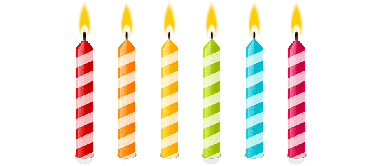

To Gaby
Hi Gaby. Apa kabar kamu? Aku tau kamu lagi gabaik-baik aja tapi aku harap kedepannya kamu bisa lebih gabaik-baik aja ya hehe :)) Aku minta maaf ya kalau nulisnya berantakan, aku sebisa mungkin nyempetin waktu buat nulis surat ini karena cuma ini yang bisa aku kasih ke kamu saat ini.
Mungkin aku sekarang gatau apakah hari ini adalah hari yang bener-bener spesial buat kamu atau nggak, yang aku tau hari ini adalah hari dimana kamu menjadi semakin dewasa dan semakin nyebelin. Dan, aku mau ngucapin dari ginjal kecilku yang paling dalam dan ini aku ambil dari Google soalnya lagi males mikir,
“Happy birthday, my BFF! May your day be as beautiful as you. Wishing you a day filled with happiness and a year filled with joy.”
Ya, hari ini 27 Agustus 2022 adalah hari Ulang Tahunmu seperti yang pernah kamu bilang sebelumnya. Aku sebenernya ga begitu percaya sama kamu kalau kamu lahir ditanggal itu hehe, tapi sengganya aku udah ngucapin selamat buat kamu di tahun ini. Aku berharap di tahun-tahun berikutnya aku masih bisa ngucapin selamat seperti ditahun ini :’)
Gab, makasih banyak ya untuk semua yang udah kamu kasih ke aku, apapun itu. Aku seneng banget dan bersyukur bisa bertemu dengan orang seperti kamu meskipun online. Banyak hal kecil dari kamu yang buat aku merasa jadi orang paling bahagia di dunia. You changed my life in a moment. Mungkin aku cowo yang egois, yang merasa mau menang sendiri, tapi jujur aja aku seneng sama kamu yang bisa kuat ngadepin orang yang seperti aku. Maafin ya kalau seumpama aku banyak salah ke kamu, maaf juga kalau banyak hal dari aku yang buat kamu marah atau sedih. Yang pasti aku gaada niat buat nyakitin kamu. Aku pengen banget kamu bisa bertahan sama aku, ya itupun kalau bisa. Kalau gabisa, aku gapapa kok, kamu punya kehidupan yang harus dijalani. Tenang aku bisa hidup tanpa kamu meskipun awalnya sulit, tapi aku yakin aku pasti bisa entah kapan itu. Biar waktu yang menjawab semuanya.
Ga kerasa juga ya kita udah berjalan cukup lama meskipun cuma sebagai temen. Hmm temen? Idk, kamu itu temen, sahabat, atau lebih dari itu. Gaada yang tau :))) Luar biasa banget ya kita udah bisa tahan sampe selama ini, 24 Maret sampe sekarang bukan waktu yang pendek buat aku :’) jujur ini adalah kali pertama aku ketemu orang secara online dan bisa bertahan lama hampir 6 bulan. Kalau dipikir secara logis sih menurutku aneh, karena percakapan kita aja gajelas tapi aku ngerasanya betah-betah aja hehe. Mungkin aku bukan orang yang akalnya sehat lagi ya, bisa-bisanya nyaman sama orang yang stressnya udah stadium 4. Bisa bayangin ga aku segila apa :)
Aku berharap, semoga pertemuan ini pada akhirnya hanya menimbulkan kenangan dan bukan luka. Semoga aku bisa kuat ngadepin kamu juga ya hehe. Yang penting dari surat ini adalah SELAMAT MENEMPUH HIDUP BARU DI UMUR YANG BARU YA! SELAMAT BERTAMBAH UMUR MENJADI 19 TAHUN. “19 Tahun” menurutku bukan hanya sekedar angka, tapi ada hurufnya juga hehe. Semoga kehidupan kamu diumur baru ini semakin berkah, dan semakin baik. Menjadi orang yang berguna bagi bangsa dan negara serta dapat memakmurkan kehidupan bermasyarakat seperti Menteri Sosial RI. Oh iya, setelah kamu liat lilin dibawah ini, aku minta kamu make a wish ya, waktunya cuma 15 detik aja karena kalau 1 jam bukan make a wish tapi make a cookies. Asal kamu tau, lilin ini udah aku doain 7 hari 7 malam sambil bertapa didalam goa dan aku ga bobo. Dan semua itu aku lakukan demi kamu. BAIK BANGET GASIH GUE HAHAHA.

Semoga harapan yang udah kamu panjatkan bisa tercapai kedepannya ya. Jaga diri ya Gab disana, meskipun aku bukan siapa-siapa, aku gamau kamu kenapa-napa disana. Tetep jadi orang yang baik ya, tetep rendah hati dimanapun kamu berada. Jangan lupain orang yang udah pernah bareng sama kamu nanti. Sukses ya Gab untuk urusan kuliahnya, semoga dilancarkan semuanya sampe lulus. Aaminnn…
Terakhir, makasih ya Gab untuk segalanya. Mungkin ini bukan versi surat terbaik yang aku buat. Banyak hal lain yang mungkin belum aku sampein disini namun hanya ini yang terlintas dipikiranku saat ini. One thing you should know, aku sebenernya ga lagi ngecamp, aku cuma diluar kota aja dan ada sinyal. Aku hari ini emang sengaja ngilang biar kamunya ngerasa sebel aja hehehe. Aku Sayang Kamu💗